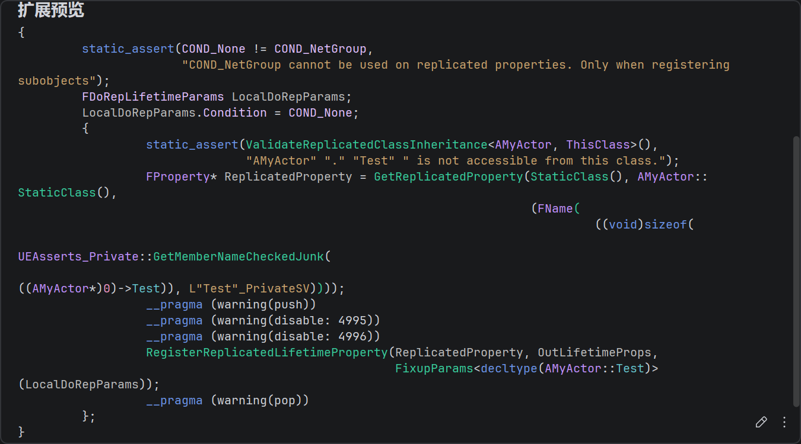

UE网络笔记三：属性同步和RPC
属性复制的注册与布局
注册写法
一个典型的写法如下
class AMyActor : public AActor
{
GENERATED_BODY()
UPROPERTY(Replicated)
bool Test;
virtual void GetLifetimeReplicatedProps(TArray<class FLifetimeProperty>& OutLifetimeProps) const override
{
Super::GetLifetimeReplicatedProps(OutLifetimeProps);
DOREPLIFETIME_CONDITION(AMyActor, Test, COND_None)
};
};这里有两处声明。第一处是 UPROPERTY(Replicated) ，UHT会把这个字段标记成带复制语义的FProperty给反射系统。第二处则是GetLifetimeReplicatedProps 和DOREPLIFETIME。这是告诉网络系统，这个类的这个属性，将会进入复制列表
可以看下宏展开

这里其实有很多细节，一一解释下。
FDoRepLifetimeParams LocalDoRepParams;
LocalDoRepParams.Condition = COND_None;FDoRepLifetimeParams 可以理解为复制注册时的附加配置，字段例如。主要作用很简单，就是描述这个属性在复制布局里的复制规则，具体不赘述了。
FDoRepLifetimeParams LocalDoRepParams;
LocalDoRepParams.Condition = COND_None;
LocalDoRepParams.RepNotifyCondition = REPNOTIFY_OnChanged;
LocalDoRepParams.bIsPushBased = false;核心展开这一段
static_assert(ValidateReplicatedClassInheritance<AMyActor, ThisClass>(),"AMyActor" "." "Test" " is not accessible from this class.");
FProperty* ReplicatedProperty = GetReplicatedProperty(StaticClass(), AMyActor::StaticClass(),
(FName(((void)sizeof(UEAsserts_Private::GetMemberNameCheckedJunk(((AMyActor*)0)->Test)), L"Test"_PrivateSV))));
RegisterReplicatedLifetimeProperty(ReplicatedProperty, OutLifetimeProps,FixupParams<decltype(AMyActor::Test)>(LocalDoRepParams));ValidateReplicatedClassInheritance这里是检查当前类和写入的AMyActor继承关系是否合法，如果是继承关系或者同一个类，就能过断言，否则输出错误信息
GetReplicatedProperty则是通过反射系统，最终拿到一个FProperty,这是反射层的属性描述对象，里面包含了诸如属性名、类型、在对象内存中的偏移等等。在这个例子中，它对应的是bool属性描述，即FBoolProperty
这个宏展开里运用了一个C++技巧
FName((sizeof(UEAsserts_Private::GetMemberNameCheckedJunk(((AMyActor*)0)->Test))), L"Test"_PrivateSV))((ACharacter*)0)->bIsCrouched，这是一个类成员访问表达式，这里在危险的访问空指针，但是此表达式又被Sizeof包裹，sizeof如果应用于表达式，并不会真正进行求值，所以这里并不会真的进行解引用，可以见https://en.cppreference.com/cpp/language/sizeof。
因此，这段内容其实是在强迫编译器进行编译期类型检查，确认AMyActor是不是真的有Test这个成员。这一长串其实基本等价于下面这段，这样就很清楚了。
FProperty* ReplicatedProperty = GetReplicatedProperty(StaticClass(), AMyActor::StaticClass(),(FName(TEXT("Test"));最后RegisterReplicatedLifetimeProperty 是为了返回OutLifetimeProps，那些属性要复制，以及用什么规则复制等内容，最终都会登记到OutLifetimeProps中，交给后续的FRepLayout消费。
FRepLayOut
通常当某个类第一次参与网络复制时，引擎要为这个类创建FRepLayout。可以看到，这里是通过CDO来调用GetLifetimeReplicatedProps
FRepLayout::CreateFromClass
RepLayout->InitFromClass
UObject* Object = InObjectClass->GetDefaultObject();
Object->GetLifetimeReplicatedProps(LifetimeProps);见UNetDriver::GetObjectClassRepLayout，RepLayoutMap缓存了所有的UClass的属性复制信息。
TSharedPtr<FRepLayout> UNetDriver::GetObjectClassRepLayout( UClass * Class )
{
TSharedPtr<FRepLayout>* RepLayoutPtr = RepLayoutMap.Find(Class);
if (!RepLayoutPtr)
{
ECreateRepLayoutFlags Flags = MaySendProperties() ? ECreateRepLayoutFlags::MaySendProperties : ECreateRepLayoutFlags::None;
RepLayoutPtr = &RepLayoutMap.Add(Class, FRepLayout::CreateFromClass(Class, ServerConnection, Flags));
}
return *RepLayoutPtr;
}OutLifetimeProps 是在 GetLifetimeReplicatedProps 里声明出来的“原始复制属性列表”。FRepLayout 是引擎根据这份列表、反射信息、属性类型、条件、RepNotify 等内容生成对应的UClass/UStruct/UFunction的“网络复制布局”。
FRepLayout引擎这里写了一大段注释，总结内容如下
- FRepLayout负责保存某个类型的可复制属性信息，诸如读取、写入属性状态，比较前后变化、序列/反序列网络数据。同一个类型只会有一个FRepLayout，描述的是类型的复制规则。
- Commands：描述某个属性，例如类型、内存中的布局、如何序列化，如何比较值，变化时是否触发RepNotify等等。
- 关于顶层属性命令（
FRepParentCmd）和子属性命令（FRepLayoutCmd），例如如果是一个C风格的数据，会有一个父命令和数组中每个元素生成一个子命令等等。 ChnageLists：不保存属性值，而保存哪些属性发生了变化，存储的是Property Handle。发送前，依次比较Layout Commands的状态，如果属性不同，就把handle写入。它的作用是告诉复制系统，这次需要处理这些属性。- 接受时候发送数据里就已经带上了handle，通过handle找到对应的Layout Command，再反序列化属性值。
- 丢包与重发机制：维护一个缓冲区跟踪最近发送的变更列表
- 收到 ACK：说明包到了，可以删除这条历史。
- 收到NAK：包丢了，把对应的
Changelist合并进下一次复制，重新发送 - 长时间无ACK/NAK，为了避免缓冲区溢出，会把历史里的
Changelist合并一起发
这里基本解释了属性同步各种相关细节。
属性同步
回到一帧，属性同步的入口函数仍在UActorChannel::ReplicateActor这里，调用路径如下，最终走到RepLayout::ReplicateProperties
UActorChannel::ReplicateActor
ActorReplicator::ReplicateProperties
RepLayout::ReplicateProperties发送端
ActorChannel 创建 FOutBunch
ServerReplicateActors 负责筛 Actor、筛连接、算优先级。写网络数据的位置是 UActorChannel::ReplicateActor。这里会先创建一个 FOutBunch，如果这是这个 Actor 在该连接上的初始复制，还会先把创建 Actor 所需的信息写进去。
int64 UActorChannel::ReplicateActor()
{
FOutBunch Bunch(this, 0); //这里的Bunch是 ActorChannel 这一帧准备发送的一段逻辑消息。
if (RepFlags.bNetInitial && OpenedLocally)
{
Connection->PackageMap->SerializeNewActor(Bunch, this, static_cast<AActor*&>(Actor));
bWroteSomethingImportant = true;
}
if (!bIsNewlyReplicationPaused)
{
bWroteSomethingImportant |= ActorReplicator->ReplicateProperties(Bunch, RepFlags);
bWroteSomethingImportant |= DoSubObjectReplication(Bunch, RepFlags);
bWroteSomethingImportant |= UpdateDeletedSubObjects(Bunch);
}
if (bWroteSomethingImportant)
{
FPacketIdRange PacketRange = SendBunch(&Bunch, 1);
}
}FObjectReplicator 写属性 payload
bool FObjectReplicator::ReplicateProperties(FOutBunch& Bunch, FReplicationFlags RepFlags)
{
FNetBitWriter Writer(Bunch.PackageMap, 8192);
return ReplicateProperties_r(Bunch, RepFlags, Writer);
}
bool FObjectReplicator::ReplicateProperties_r(FOutBunch& Bunch, FReplicationFlags RepFlags, FNetBitWriter& Writer)
{
const ERepLayoutResult UpdateResult = FNetSerializeCB::UpdateChangelistMgr(*RepLayout, SendingRepState, *ChangelistMgr, Object, Connection->Driver->ReplicationFrame, RepFlags, OwningChannel->bForceCompareProperties || bUseCheckpointRepState);
const bool bHasRepLayout = RepLayout->ReplicateProperties(SendingRepState, ChangelistMgr->GetRepChangelistState(), (uint8*)Object, ObjectClass, OwningChannel, Writer, RepFlags);
if (RemoteFunctions != nullptr && RemoteFunctions->GetNumBits() > 0)
{
Writer.SerializeBits(RemoteFunctions->GetData(), RemoteFunctions->GetNumBits());
RemoteFunctions->Reset();
RemoteFuncInfo.Empty();
}
const bool WroteImportantData = Writer.GetNumBits() != 0;
if (WroteImportantData)
{
OwningChannel->WriteContentBlockPayload(Object, Bunch, bHasRepLayout, Writer);
}
return WroteImportantData;
}-
FObjectReplicator并不是直接把每个属性写进FOutBunch。它先准备一个临时的FNetBitWriter Writer，让FRepLayout把属性差异写进去。等确认真的写了东西，再通过UActorChannel::WriteContentBlockPayload把这段 payload 塞进Bunch。 -
RemoteFunctions某些 RPC，典型如默认策略下的 unreliable multicast RPC，不一定立刻单独发一个 bunch，而是先排到这个对象的 replicator 上，等属性复制时一起追加到同一个 content block 的 payload 后面。
FRepLayout 生成并写出 changelist
FRepLayout::ReplicateProperties接收的是 changelist，而不是完整对象。发送侧关心的是这次哪些 property handle 需要发。
bool FRepLayout::ReplicateProperties(FSendingRepState* RepState, FRepChangelistState* RepChangelistState, const FConstRepObjectDataBuffer Data, UClass* ObjectClass, UActorChannel* OwningChannel, FNetBitWriter& Writer, const FReplicationFlags& RepFlags) const
{
// 省略条件复制、ACK/NAK 历史维护等逻辑，只保留 changelist 合并
// ...
TArray<uint16>& Changed = PossibleNewHistoryItem.Changed;
for (int32 i = RepState->LastChangelistIndex; i < RepChangelistState->HistoryEnd; ++i)
{
FRepChangedHistory& HistoryItem = RepChangelistState->ChangeHistory[i % FRepChangelistState::MAX_CHANGE_HISTORY];
TArray<uint16> Temp = MoveTemp(Changed);
MergeChangeList(Data, HistoryItem.Changed, Temp, Changed);
}
if (Changed.Num() > 0)
{
SendProperties(RepState, ChangeTracker, Data, ObjectClass, Writer, Changed, RepChangelistState->SharedSerialization, RepFlags.bSerializePropertyNames ? ESerializePropertyType::Name : ESerializePropertyType::Handle);
}
}这一层可以理解成：UpdateChangelistMgr 负责比较对象当前内存和 shadow state，得到“变化列表”；FRepLayout::ReplicateProperties 再结合 ACK/NAK 历史、条件复制、初始复制等状态，把本次应该发送的 changelist 合并出来；最后 SendProperties 按 property handle 或属性名写出实际属性数据。
content block 包装对象 payload
等属性或 RPC payload 写完以后，UActorChannel::WriteContentBlockPayload 会给这段 payload 套一层 content block 头。content block 是 ActorChannel 里的对象级分段：它告诉接收端“接下来这段 payload 属于 Actor 本身，还是某个 Component/Subobject”。
int32 UActorChannel::WriteContentBlockPayload(UObject* Obj, FNetBitWriter& Bunch, const bool bHasRepLayout, FNetBitWriter& Payload)
{
const int32 StartHeaderBits = Bunch.GetNumBits();
WriteContentBlockHeader(Obj, Bunch, bHasRepLayout);
uint32 NumPayloadBits = Payload.GetNumBits();
Bunch.SerializeIntPacked(NumPayloadBits);
const int32 HeaderNumBits = Bunch.GetNumBits() - StartHeaderBits;
Bunch.SerializeBits(Payload.GetData(), Payload.GetNumBits());
return HeaderNumBits;
}
void UActorChannel::WriteContentBlockHeader(UObject* Obj, FNetBitWriter& Bunch, const bool bHasRepLayout)
{
Bunch.WriteBit(bHasRepLayout ? 1 : 0);
const bool IsActor = Obj == Actor;
Bunch.WriteBit(IsActor ? 1 : 0);
if (!IsActor)
{
Bunch << Obj;
// 后面还会写 stable name、delete 标记、class、outer 等 subobject 信息
}
}所以一个 ActorChannel 的 bunch 里，内容大概长这样：
FOutBunch
[如果是初始复制] NewActor 信息
ContentBlock(Actor)
bHasRepLayout
bIsActor = true
PayloadBits
属性复制数据
可能追加的 queued RPC 数据
ContentBlock(Component/Subobject)
bHasRepLayout
bIsActor = false
Subobject NetGUID / Class / Outer ...
PayloadBits
属性复制数据或 RPC 数据接收端
从 FInBunch 找到对象 payload
接收侧的入口在更底层。UNetConnection 从 packet 中拆出 FInBunch，根据 bunch header 找到 channel，再进入对应 channel 的业务处理。UActorChannel::ProcessBunchInternal 先处理 Actor 是否已经存在。对于初始复制，发送侧写了 SerializeNewActor，接收侧也用同一个接口读取，可能找到已有 Actor，也可能 spawn 一个新的 Actor。
void UActorChannel::ProcessBunchInternal(FInBunch& Bunch)
{
FReplicationFlags RepFlags;
if (Actor == NULL)
{
if (!Bunch.bOpen)
{
return;
}
AActor* NewChannelActor = NULL;
bSpawnedNewActor = Connection->PackageMap->SerializeNewActor(Bunch, this, NewChannelActor);
SetChannelActor(NewChannelActor, Flags);
NotifyActorChannelOpen(Actor, Bunch);
RepFlags.bNetInitial = true;
}
while (!Bunch.AtEnd() && Connection != NULL)
{
FNetBitReader Reader(Bunch.PackageMap, 0);
bool bHasRepLayout = false;
UObject* RepObj = ReadContentBlockPayload(Bunch, Reader, bHasRepLayout);
TSharedRef<FObjectReplicator>& Replicator = FindOrCreateReplicator(RepObj);
bool bHasUnmapped = false;
Replicator->ReceivedBunch(Reader, RepFlags, bHasRepLayout, bHasUnmapped);
}
for (auto RepComp = ReplicationMap.CreateIterator(); RepComp; ++RepComp)
{
RepComp.Value()->PostReceivedBunch();
}
if (Actor && bSpawnedNewActor)
{
Actor->PostNetInit();
}
}这里和发送侧的 content block 对上了。ReadContentBlockPayload 会先读 content block header，确认这段 payload 属于哪个对象，再根据 NumPayloadBits 从 Bunch 中切出一段独立的 Reader。
UObject* UActorChannel::ReadContentBlockPayload(FInBunch& Bunch, FNetBitReader& OutPayload, bool& bOutHasRepLayout)
{
UObject* RepObj = ReadContentBlockHeader(Bunch, bObjectDeleted, bOutHasRepLayout);
if (bObjectDeleted)
{
OutPayload.SetData(Bunch, 0);
return nullptr;
}
uint32 NumPayloadBits = 0;
Bunch.SerializeIntPacked(NumPayloadBits);
OutPayload.SetData(Bunch, NumPayloadBits);
return RepObj;
}FObjectReplicator 读取属性
FObjectReplicator::ReceivedBunch会先处理 bHasRepLayout 对应的普通属性复制，再继续读取后续的 field payload。
bool FObjectReplicator::ReceivedBunch(FNetBitReader& Bunch, const FReplicationFlags& RepFlags, const bool bHasRepLayout, bool& bOutHasUnmapped)
{
if (bHasRepLayout)
{
if (!bHasReplicatedProperties)
{
bHasReplicatedProperties = true;
PreNetReceive();
}
EReceivePropertiesFlags ReceivePropFlags = EReceivePropertiesFlags::None;
if (ConnectionNetDriver->ShouldReceiveRepNotifiesForObject(Object))
{
ReceivePropFlags |= EReceivePropertiesFlags::RepNotifies;
}
bool bLocalHasUnmapped = false;
bool bGuidsChanged = false;
LocalRepLayout.ReceiveProperties(OwningChannel, ObjectClass, RepState->GetReceivingRepState(), Object, Bunch, bLocalHasUnmapped, bGuidsChanged, ReceivePropFlags);
}
while (true)
{
if (!OwningChannel->ReadFieldHeaderAndPayload(Object, ClassCache, NetFieldExportGroup, Bunch, &FieldCache, Reader))
{
break;
}
if (FStructProperty* ReplicatedProp = CastField<FStructProperty>(FieldCache->Field.ToField()))
{
FNetSerializeCB::ReceiveCustomDeltaProperty(LocalRepLayout, ReceivingRepState, Parms, ReplicatedProp);
}
}
}FRepLayout 还原属性并记录 RepNotify
普通属性的还原发生在 FRepLayout::ReceiveProperties 中。它先读 property handle，再通过 handle 找到对应的 layout command，把网络数据反序列化回对象内存。接收过程中如果开启 RepNotify，还会把需要触发的属性记录到 ReceivingRepState->RepNotifies。
bool FRepLayout::ReceiveProperties(UActorChannel* OwningChannel, UClass* InObjectClass, FReceivingRepState* RepState, UObject* Object, FNetBitReader& InBunch, bool& bOutHasUnmapped, bool& bOutGuidsChanged, const EReceivePropertiesFlags ReceiveFlags) const
{
FReceivePropertiesSharedParams Params{
bDoChecksum,
EnumHasAnyFlags(ReceiveFlags, EReceivePropertiesFlags::SkipRoleSwap)
|| !EnumHasAnyFlags(Flags, ERepLayoutFlags::IsActor),
InBunch,
bOutHasUnmapped,
bOutGuidsChanged,
Parents,
Cmds,
NetSerializeLayouts,
Object,
OwningChannel->Connection->GetInTraceCollector()
};
FReceivePropertiesStackParams StackParams{
FRepObjectDataBuffer(Data),
FRepShadowDataBuffer(RepState->StaticBuffer.GetData()),
&RepState->GuidReferencesMap,
0,
Cmds.Num() - 1,
bEnableRepNotifies ? &RepState->RepNotifies : nullptr
};
ReadPropertyHandle(Params);
if (ReceiveProperties_r(Params, StackParams))
{
return Params.ReadHandle == 0;
}
return false;
}这里的 terminator handle 也很重要。发送侧属性数据不是靠“固定长度结构体”结束的，而是按 handle 流读取，读到 0 表示这组属性结束。因此如果客户端和服务端的 RepLayout 不一致，或者某个属性 NetSerialize 写坏了，就可能出现 handle 读错、terminator 不对、连接被关闭等问题。
PostNetReceive 和 OnRep
属性写入对象后，并不是马上调用 OnRep。ProcessBunchInternal 处理完这一整个 bunch 中的 content block 后，会对每个 replicator 调用 PostReceivedBunch。
void FObjectReplicator::PostReceivedBunch()
{
const bool bIsServer = (OwningChannel->Connection->Driver->ServerConnection == nullptr);
if (!bIsServer && bHasReplicatedProperties)
{
PostNetReceive();
bHasReplicatedProperties = false;
}
CallRepNotifies(true);
}
void FObjectReplicator::CallRepNotifies(bool bSkipIfChannelHasQueuedBunches) const
{
FReceivingRepState* ReceivingRepState = RepState->GetReceivingRepState();
RepLayout->CallRepNotifies(ReceivingRepState, Object);
if (IsValid(Object))
{
Object->PostRepNotifies();
}
}最终 FRepLayout::CallRepNotifies 会根据 RepNotifies 列表找到对应的 RepNotifyFunc，通过 ProcessEvent 调用。OnRep 可以没有参数，也可以带旧值参数；这些差异都在这里处理。
void FRepLayout::CallRepNotifies(FReceivingRepState* RepState, UObject* Object) const
{
for (FProperty* RepProperty : RepState->RepNotifies)
{
UFunction* RepNotifyFunc = Object->FindFunction(RepProperty->RepNotifyFunc);
switch (RepNotifyFunc->NumParms)
{
case 0:
Object->ProcessEvent(RepNotifyFunc, nullptr);
break;
case 1:
// 实际源码会根据属性类型准备旧值参数，这里只保留调用点
// ...
Object->ProcessEvent(RepNotifyFunc, PropertyData);
break;
case 2:
// CustomDelta 可能带旧值和附加 metadata
// ...
Object->ProcessEvent(RepNotifyFunc, Parms);
break;
}
}
RepState->RepNotifies.Empty();
RepState->RepNotifyMetaData.Empty();
}RPC路径
发送端
FieldHeader 定位 UFunction
RPC 的接收则从 ReceivedBunch 的 field payload 分支进入 FObjectReplicator::ReceivedRPC。它先用 field header 找到函数名，再在本地对象上找 UFunction，检查是不是网络函数，以及当前连接是否有权执行这个方向的 RPC。
while (true)
{
if (!OwningChannel->ReadFieldHeaderAndPayload(Object, ClassCache, NetFieldExportGroup, Bunch, &FieldCache, Reader))
{
break;
}
if (Cast<UFunction>(FieldCache->Field.ToUObject()))
{
TSet<FNetworkGUID> UnmappedGuids;
bool bSkippedRpcExec = false;
ReceivedRPC(Reader, UnmappedGuids, bSkippedRpcExec, RepFlags, FieldCache, SkipRpcBehavior);
}
}bool FObjectReplicator::ReceivedRPC(FNetBitReader& Reader, TSet<FNetworkGUID>& UnmappedGuids, bool& bOutSkippedRpcExec, const FReplicationFlags& RepFlags, const FFieldNetCache* FieldCache, ESkipRpcBehavior SkipRpcBehavior)
{
UObject* Object = GetObject();
FName FunctionName = FieldCache->Field.GetFName();
UFunction* Function = Object->FindFunction(FunctionName);
if ((Function->FunctionFlags & FUNC_Net) == 0)
{
HANDLE_INCOMPATIBLE_RPC
}
if ((Function->FunctionFlags & FUNC_NetServer) && !bIsServer)
{
HANDLE_INCOMPATIBLE_RPC
}
if ((Function->FunctionFlags & (FUNC_NetClient | FUNC_NetMulticast)) && bIsServer)
{
HANDLE_INCOMPATIBLE_RPC
}
const bool bCanExecute = Connection->Driver->ShouldCallRemoteFunction(Object, Function, RepFlags);
if (bCanExecute)
{
uint8* Parms = new(FMemStack::Get(), MEM_Zeroed, Function->ParmsSize) uint8;
TSharedPtr<FRepLayout> FuncRepLayout = Connection->Driver->GetFunctionRepLayout(LayoutFunction);
FuncRepLayout->ReceivePropertiesForRPC(Object, LayoutFunction, OwningChannel, Reader, Parms, UnmappedGuids);
if (!bOutSkippedRpcExec)
{
Connection->Driver->ForwardRemoteFunction(OwningActor, SubObject, Function, Parms);
if (Connection->Driver->IsExecuteRPCFunctionsEnabled())
{
CallProcessEventForReceivedRPC(Object, Function, Parms);
}
}
}
}RPC 参数还原并 ProcessEvent
ReceivePropertiesForRPC 和发送侧的 SendPropertiesForRPC 对应。发送侧按函数参数布局写，接收侧按同一个函数参数布局读，最后把参数内存交给 ProcessEvent。
void FRepLayout::ReceivePropertiesForRPC(UObject* Object, UFunction* Function, UActorChannel* Channel, FNetBitReader& Reader, FRepObjectDataBuffer Data, TSet<FNetworkGUID>& UnmappedGuids) const
{
for (int32 i = 0; i < Parents.Num(); i++)
{
if (CastField<FBoolProperty>(Parents[i].Property) || Reader.ReadBit())
{
bool bHasUnmapped = false;
SerializeProperties_r(Reader, Reader.PackageMap, Parents[i].CmdStart, Parents[i].CmdEnd, Data, bHasUnmapped, 0, 0, Empty, Collector, Object);
}
}
if (Reader.PackageMap->GetTrackedUnmappedGuids().Num() > 0)
{
UnmappedGuids = Reader.PackageMap->GetTrackedUnmappedGuids();
}
}总结
两者都走 ActorChannel 和 content block。属性复制是在修正对象状态，允许合并、跳过中间态、依赖后续更新追赶；RPC 是一次函数调用，尤其 reliable RPC 会被 channel 可靠队列约束，目标是让这次调用按规则到达并执行。
因此写 Gameplay 逻辑时，不应该把“属性最终会同步”和“RPC 一定按某个属性更新前后执行”混在一起假设。同一个 packet 中谁先处理，取决于 bunch/content block/field 在流里的顺序。